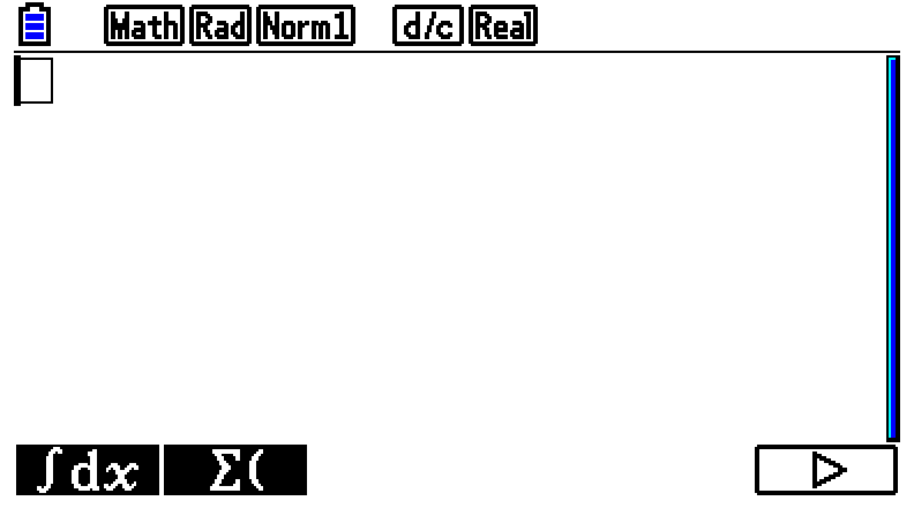
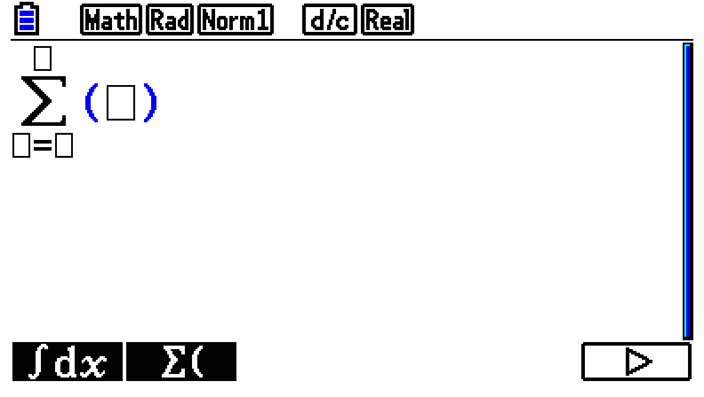
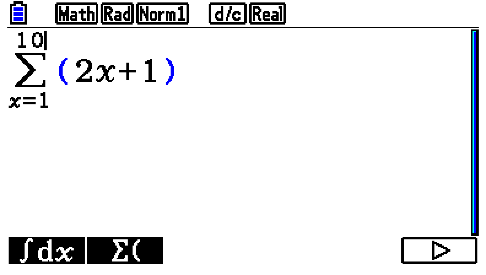
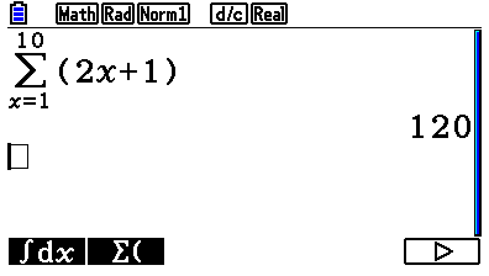

Sum of a series with sigma notation
Question
Find $\displaystyle\sum_{k=1}^{10}(2k+1)$. The same steps work for a geometric series: type its general term instead.
Strategy
Use the $\Sigma$ template in Run-Matrix. Type the general term, then the variable and its start and end values, and press EXE.
Before you start
Use Run-Matrix. Math input mode gives the Σ template.
1Open Run-Matrix and find the Σ template
MENU1Run-Matrix
F4MATHF6next pageF2Σ(
Σ( is on the second page of the MATH menu, next to ∫dx.

2The Σ template
Cursor starts in the expression box
Fill it in this order: the term, then the variable, the first value and the last value, using ▶ to move between boxes.

3Enter the term and the limits
2X,θ,T+1term
▶X,θ,Tvariable
▶1first value
▶10last value
The variable is X. The limits are the first and last values of the index.
Σ (2x + 1), x = 1 to 10

4Evaluate
EXE
120

Conclusion
$\displaystyle\sum_{k=1}^{10}(2k+1)=120$.